미니 프로젝트
최근 TDD 방식으로 테스트 코드를 먼저 작성하고 프로덕션 코드를 이후에 작성하는 방식을 공부했습니다.
복습하는 차원에서 기억을 떠올려보면서 공부하려고 합니다.
TDD를 통해서 작성하는 이유
TDD는 테스트 코드를 작성하는 방식중 하나이며, 먼저 테스트 코드를 통해서 로직을 작성하기 때문에 객체 지향적으로 코드를 작성할 수 있다는 장점이 있습니다.
랜덤 요소 interface로 분리하기
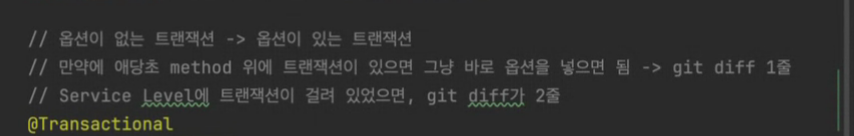
트랜잭션 풀에서 꺼내서 사용하기 때문에 풀이 모잘라서 죽을수 있어서 최대한 외부 네트워크는 트랜잭션을 사용하지 않는다.
DB user Lock을 사용하는 경우에 native 기능을 사용한다.
빌더를 사용하면 서비스가 길어진다.
case when 도 성능때문 가능한 안쓰는게 좋다.
굳이 안받아도 된다.
API호출을 기가막히게 2번했을 경우 스프링은 기본적으로 멀티쓰레드 환경에서 돌아간다. 쓰레드가 해당 요청 한개 요청에 처리하기 때문에
// 1번 쓰레드에 1번 요청 // 2번 쓰레드에 2번 요청
막는 방법
락이 기본이다. 3가지 낙관적락 / 비관적락 / 유저 락 - 비용 측면도 고려해야한다. 유니크로 막을 수 있다. - 유니크 키가 쉽다.
도메인에 관한 계산 로직을 전문으로 하는 클래스를 만들면 테스트 코드도 작성하기 쉽고, 테스트 코드도 간결해진다. priavete이 많으면 새로운 클래스가 필요하다고 한다. 일급 컬렉션
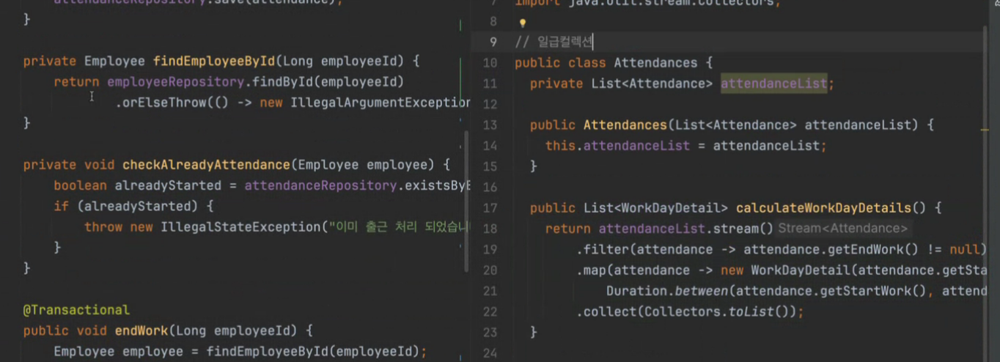
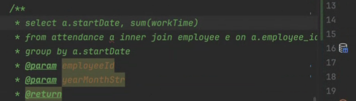
테이블이 무조건 엔티티고, 엔티티의 필드는 최소한으로 구성하게 되는데 자연 스럽게 추가적인 필드를 만들수도 있고, 테이블과 Damain이 달라도 된다.
다른 서비스에서 다른 도메인이 필요한 경우 순환참조에 걸릴 수 있다.
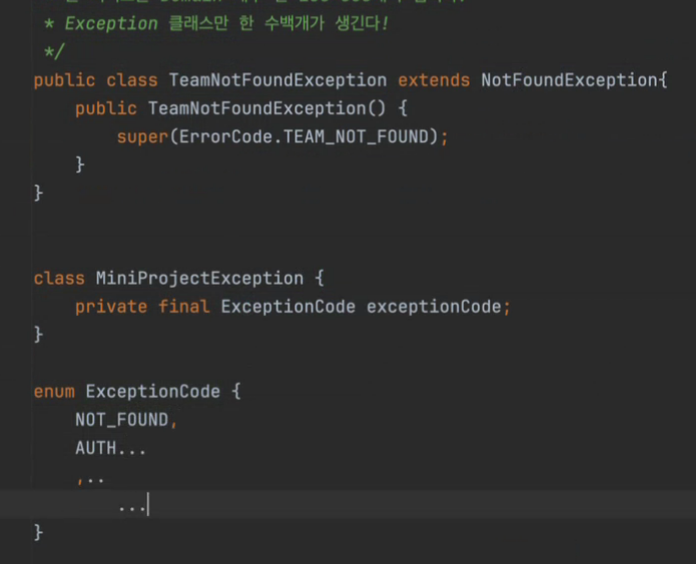
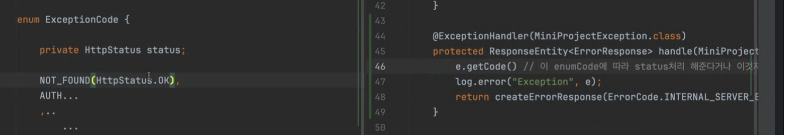
에러 코드를 만든다 = 클라이언트에서 예외 상황을 반드시 구분해야한다. // 디버그 용도라고 해도 스택트레이스가남아서 어디서 예외가 났는지 알 수있다. // 예외를 둗이 구분하지 않아도 예외 처리 // 화면에서 보여주고 싶을 때만 에러코드를 만든다. 클라이언트에서 에러코드를 핸들링 해야한다.
// API 성공/ 실패 -> 에러코드를 만든다.
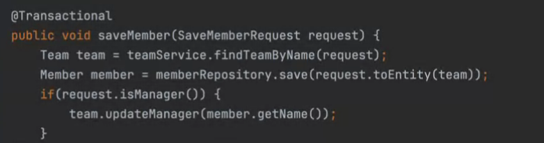
자동으로 생성되는 값을 비즈니스 로직에 넣어도 되는지?
JPA를 너무 믿는다.
날짜라는건 어디 서버에서 실행하는지, 어떤 옵션으로 실행하는지에 따라 다르다.
외부에 노출해야하는 날짜 필드는 무조건 직접 필드를 만든다.
서비스에서 검증로직은 별도로 빼는 것도 방법이다.
코드를 잘 짜면 뎁스가 3번 이상으로 내려가 지 않는다.
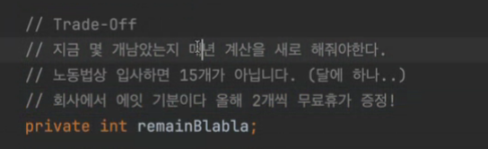
스케줄러
스프링 배치를 짜서 Jenkins 스케쥴러를 붙여서 돌린다.
--> 멀티 모듈이 등장한다.
미니 프로젝트에 API기능과 스케줄러 기능을 같이 썼는데 만약에 회사가터져서 직원수가 5천명이 된다면 서버 한대로 부족하다. 서버를 여러대 돌리는건 1번 서버 스케줄러가 돌고 2번 서버 스케줄러가 돈다. 멀티모듈을 써서 api와 스케줄러를 다른걸로 분리를 하고 API만 늘릴수 잇겟금 한다. 전체직원 남은 연차를 보여주세요 1만명 돌리기 -> 필드로 사용하기
도메인과 테이블이 다를 수 있다는 필드가 차이난다는거아니라 Member라는 테이블은 Member와 Members가 있다.
도메인과 엔티티 분리
인터페이스와 구현체를 철저하게 분리
장점 : 갈아끼는게 용이하다.
단점 : 약간 귀찮음.
갈아끼워질지 갈아 끼워지지 않을지 블지
실제 비즈니스 로직을 넣을 도메인 객체와 DB와 매핑되는 엔티티 객체를 분리
굉장히 우수한 구조가 많다. -> 헥사고날 아키텍처 / 클린 아키텍처
도메인이 데이터 베이스에 너무 의존적이다.
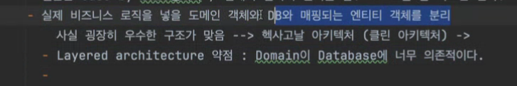
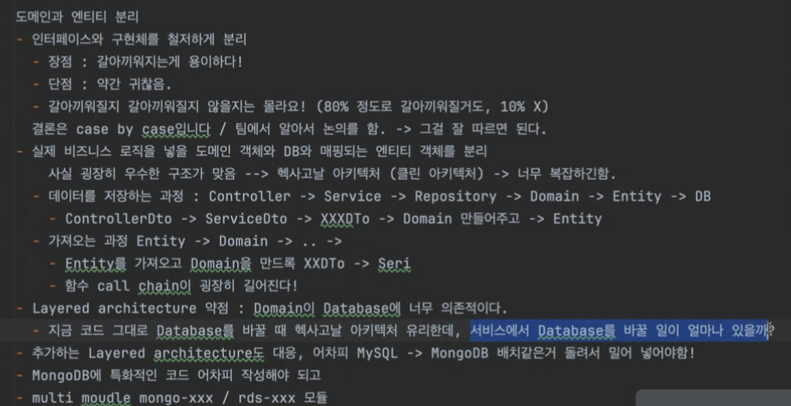
레이어드 아키텍처는 약점이 있다는걸 알고서 사용한다.
프로젝션과 객체지향도 트레이드 오프다
객체지향적이면 테스트 코드나 유지보수가 쉬운지 생각해야한다.
캐시도 트레이드 오프다
// pathVariable 을 사용하면 아쉽다. 호출 로깅이 가능하다.
// DTO 객체 운용이 안된다. 객체지향적으로 검증을 할 수가 없다 필드로 받는다.
// LocalDate 월말을 가져오고 싶다, 월초를 가져오고 싶다. // TemperalAdJuster.firstInMonth
절대적인 시간을 위해서 숫자로 저장하는 경우도 있다.
// sealed class + 자바 21 switch patten maching // Cat,Dog
// 캐시 , 인덱스 - 조회 속도 출근이 몇십만건 몇달치를 한번 / 배치까지
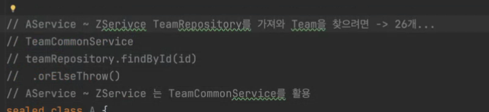
orElseThrow 전용 서비스 객체를 만들어서 외부용, 내부용 서비스를 만들어서 사용하는 것도 방법이다. - Visitor
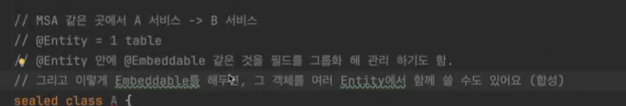